자동차정비산업기사 (2019-04-27 기출문제)
1과목: 일반기계공학
1. 펌프의 캐비테이션 방지책으로 틀린 것은?
- 펌프의 설치 위치를 높인다.
- 회전수를 낮추어 흡입 비교 회전도를 낮게 한다.
- 단흡입 펌프 대신 양흡입 펌프를 사용한다.
- 펌프의 흡입관 손실을 작게 한다.
(정답률: 71%)

2. 알루미늄 분말, 산화철 분말과 점화제의 혼합반응으로 열을 발생시켜 용접하는 방법은?
- 테르밋 용접
- 피복 아크 용접
- 일렉트로 슬래그 용접
- 불활성 가스 아크 용접
(정답률: 67%)
3. 그림과 같이 자유단에 집중 하중을 받고 있는 외팔보의 굽힘 모멘트 선도로 가장 적합한 것은?
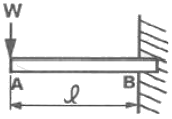
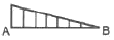
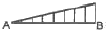
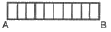
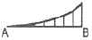
(정답률: 64%)
4. 구멍용 한계 게이지에 포함되지 않는 것은?
- C형 스냅게이지
- 원통형 플러그 게이지
- 봉 게이지
- 판 플러그 게이지
(정답률: 61%)
5. 다음 중 새들 키라고도 하며 축에는 키 홈이 없고, 축의 원호에 접할 수 있도록 하며 보스에만 키 홈을 파는 것은?
- 안장 키
- 접선 키
- 평 키
- 반달
(정답률: 75%)
6. 속이 찬 회전축의 전달마력이 7kW이고 회전수가 350rpm일 때 축의 전달 토크는 약 몇 N·m 인가?
- 101
- 151
- 191
- 231
(정답률: 46%)
7. 강과 주철은 어떤 원소의 함유량에 의해 구분 하는가?
- C
- Mn
- Ni
- S
(정답률: 71%)
8. 용기 내의 압력을 대기압력 이하의 저압으로 유지하기 위해 대기압력 쪽으로 기체를 배출하는 장치는?
- 공기압축기
- 진공펌프
- 송풍기
- 축압기
(정답률: 67%)
9. 연성재료의 절삭가공 시 발생하는 칩의 형태로 절삭저항이 가장 적고, 매끈한 가공면을 얻을 수 있는 칩의 형태는?
- 전단형
- 유동형
- 균열형
- 열단형
(정답률: 60%)
10. 도가니로의 규격은 어떻게 표시하는가?
- 시간당 용해 가능한 구리의 중량
- 시간당 용해 가능한 구리의 부피
- 한 번에 용해 가능한 구리의 중량
- 한 번에 용해 가능한 구리의 부피
(정답률: 64%)
11. 평벨트와 비교하여 V벨트의 전동특성에 해당하지 않는 것은?
- 미끄럼이 작다.
- 운전이 정숙하다.
- 평 벨트와 같이 벗겨지는 일이 없다.
- 지름이 작은 풀리에는 사용이 어렵다.
(정답률: 75%)
12. 원형 단면의 축에 발생한 비틀림에 대한 설명으로 옳지 않은 것은? (단, 재질은 동일하다. )
- 비틀림각이 클수록 전단 변형률은 크다.
- 축의 지름이 클수록 전단 변형률은 크다.
- 축의 길이가 길수록 전단 변형률은 크다.
- 축의 지름이 클수록 전단 응력은 크다.
(정답률: 44%)
13. 다음 중 체결용으로 가장 많이 쓰이는 나사는?
- 사각나사
- 삼각나사
- 톱니나사
- 사다리꼴나사
(정답률: 69%)
14. 판 두께 10mm, 인장강도 3500cm, 안전계수 4인 연강판으로 5N/cm2의 내압을 받는 원통을 만들고자 한다. 이때 원통의 안지름은 몇 cm인가?
- 87.5
- 175
- 350
- 700
(정답률: 41%)
15. 기어나 피스톤 핀 등과 같이 마모작용에 강하고 동시에 충격에도 강해야 할 때, 강의 표면을 경화하기 위하여 열처리하는 방법이 아닌 것은?
- 침탄법
- 고주파법
- 침탄질화범
- 저온풀림법
(정답률: 63%)
16. Al, Cu, Mg으로 구성된 합금에서 인장강도가 크고 시효경화를 일으키는 고력(고강도)알루미늄 합금은?
- Y합금
- 실루민
- 로우엑스
- 두랄루민
(정답률: 74%)
17. 그림의 유압장치에서 A부분 실린더 단면적이 200cm2 , B부분 실린더 단면적이 50cm2일 때 F2에 작용하는 힘이 1000N이면 F1에는 몇 N의 힘이 작용하는가?
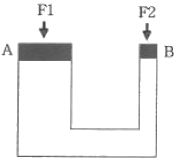
- 3000
- 4000
- 5000
- 6000
(정답률: 75%)
18. 프와송의 비로 옳은 것은?
- 세로변형률/가로변형률
- 부피변형률/세로변형률
- 세로변형률/부피변형률
- 가로변형률/세로변형률
(정답률: 66%)
19. 인발에 영향을 미치는 요인이 아닌 것은?
- 윤활방법
- 단면 감소율
- 펀치의 각도
- 다이(die)의 각도
(정답률: 58%)
20. 그림과 같은 코일 스프링 장치에서 작용하는 하중을 W, 스프링 상수를 K1, K2라 할 경우, 합성스프링 상수를 바르게 표현한 것은?
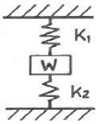
- K1+K2
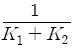
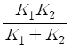
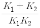
(정답률: 64%)
2과목: 자동차엔진
21. 출력이 A= 120PS, B=90kW, C=110HP 인 3개의 엔진을 출력이 큰 순서대로 나열한 것은?
- B ＞ C ＞ A
- A ＞ C ＞ B
- C ＞ A ＞ B
- B ＞ A ＞ C
(정답률: 56%)
22. 전자제어 가솔린엔진에서 고속운전 중 스로틀 밸브를 급격히 닫을 때 연료 분사량을 제어하는 방법은?
- 변함 없음
- 분사량 증가
- 분사량 감소
- 분사 일시 중단
(정답률: 78%)
23. 점화 파형에서 파워 TR(트랜지스터)의 통전시간을 의미하는 것은?
- 전원전압
- 피크(peak) 전압
- 드웰(dwell)시간
- 점화시간
(정답률: 77%)
24. 자동차에 사용되는 센서 중 원리가 다른 것은?
- 맵(MAP)센서
- 노크센서
- 가속페달센서
- 연료탱크압력센서
(정답률: 54%)
25. 라디에이터 캡의 점검 방법으로 틀린 것은?
- 압력이 하강하는 경우 캡을 교환한다.
- 0.95~1.25gf/cm정도로 압력을 가한다.
- 압력 유지 후 약 10~20초 사이에 압력이 상승하면 정상이다.
- 라디에이터 캡을 분리한 뒤 씰 부분에 냉각수를 도포하고 압력 테스터를 설치한다.
(정답률: 66%)
26. 디젤엔진의 배출가스 특성에 대한 설명으로 틀린 것은?
- NOx저감 대책으로 연소 온도를 높인다.
- 가솔린 기관에 비해 CO, HC배출량이 적다.
- 입자상물질(PM)을 저감하기 위해 필터(DPF)를 사용한다.
- NOx배출을 줄이기 위해 배기가스 재순환 장치를 사용한다.
(정답률: 58%)
27. LPG를 사용하는 자동차에서 봄베의 설명으로 틀린 것은?
- 용기의 도색은 회색으로 한다.
- 안전밸브에 주 밸브를 설치할 수는 없다.
- 안전밸브는 충전밸브와 일체로 조립된다.
- 안전밸브에서 분출된 가스는 대기 중으로 방출되는 구조이다.
(정답률: 63%)
28. 도시마력 (지시마력, indicated horsepower) 계산에 필요한 항목으로 틀린 것은?
- 총 배기량
- 엔진 회전수
- 크랭크축 중량
- 도시 평균 유효 압력
(정답률: 80%)
29. 다음 설명에 해당하는 커먼레일 인젝터는?
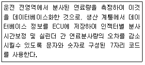
- 일반 인젝터
- IQA 인젝터
- 클래스 인젝터
- 그레이드 인젝터
(정답률: 78%)
30. 전자제어 MPI가솔린엔진과 비교한 GDI엔진의 특징에 대한 설명으로 틀린 것은?
- 내부냉각효과를 이용하여 출력이 증가된다.
- 층상 급기모드를 통해 ERG비율을 많이 높일 수 있다.
- 연료분사 압력이 높고, 연료 소비율이 향상된다.
- 층상 급기모드 연소에 의하여 NOx 배출이 현저히 감소한다.
(정답률: 47%)
31. 디젤엔진에서 단실식 연료분사방식을 사용하는 연소실의 형식은?
- 와류실식
- 공기실식
- 예연소실식
- 직접분사실식
(정답률: 74%)
32. 4행정 가솔린엔진이 1분당 2500rpm에서 9.23kgf·m의 회전토크일 때 축마력은 약몇 ps인가?
- 28.1
- 32.2
- 35.3
- 37.5
(정답률: 49%)
33. 다음 그림은 스로틀 포지션 센서 (TPS)의 내부회로도이다. 스로틀 밸브가 그림에서 B와 같이 닫혀 있는 현재 상태의 출력전압은 약 몇 V인가? (단, 공회전 상태이다.)
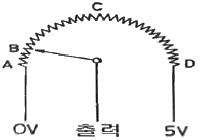
- 0V
- 약 0.5V
- 약 2.5V
- 약 5V
(정답률: 79%)
34. 전자제어 엔진에서 연료 차단 (fuel cut)에 대한 설명으로 틀린 것은?
- 배출가스 저감을 위함이다.
- 연비를 개선하기 위함이다.
- 인젝터 분사 신호를 정지한다.
- 엔진의 고속회전을 위한 준비단계이다.
(정답률: 77%)
35. 윤활유의 주요 기능이 아닌 것은?
- 방청작용
- 산화작용
- 밀봉작용
- 응력분산작용
(정답률: 76%)
36. 엔진 크랭크축의 휨을 측정할 때 필요한 기기가 아닌 것은?
- 블록 게이지
- 정반
- 다이얼 게이지
- V블럭
(정답률: 66%)
37. 배출가스 측정 시 HC (탄화수소)의 농도단위인 ppm을 설명한 것으로 적당한 것은?
- 백분의 1을 나타내는 농도단위
- 천분의 1을 나타내는 농도단위
- 만분의 1을 나타내는 농도단위
- 백만분의 1을 나타내는 농도단위
(정답률: 59%)
38. 피스톤의 재질로서 가장 거리가 먼 것은?
- Y-합금
- 특수 주철
- 켈밋 합금
- 로엑스(Lo-Ex)합금
(정답률: 51%)
39. 4실린더 4행정 사이클 엔진을 65PS로 30분간 운전시켰더니 연료가 10L소모되었다. 연료의 비중이 0.73, 저위발열량이 11000kcal/kg이라면 이 엔진의 열효율은 몇 %인가? (단, 1마력당 일량은 632.5kcal/h 이다.)
- 23.6
- 24.6
- 25.6
- 51.2
(정답률: 44%)
40. 전자제어 가솔린 분사장치(MPI)에서 폐회로 공연비 제어를 목적으로 사용하는 센서는?
- 노크센서
- 산소센서
- 차압센서
- EGR 위치센서
(정답률: 74%)
3과목: 자동차섀시
41. 제동장치에서 공기 브레이크의 구성 요소가 아닌 것은?
- 언로더 밸브
- 릴레이 밸브
- 브레이크 챔버
- 하이드로 에어백
(정답률: 61%)
42. 클러치의 구비조건에 대한 설명으로 틀린 것은?
- 단속 작용이 확실해야 한다.
- 회전부분의 평형이 좋아야 한다.
- 과열되지 않도록 냉각이 잘 되어야 한다.
- 전달효율이 높도록 회전관성이 커야 한다.
(정답률: 73%)
43. 자동차 타이어의 수명에 영향을 미치는 요인과 가장 거리가 먼 것은?
- 엔진의 출력
- 주행 노면의 상태
- 타이어와 노면 온도
- 주행 시 타이어 적정 공기압 유무
(정답률: 81%)
44. 하이드로 플래닝에 관한 설명으로 옳은 것은?
- 저속으로 주행할 때 하이드로 플래닝이 쉽게 발생한다.
- 트레이드가 과하게 마모된 타이어에서는 하이드로 플래닝이 쉽게 발생한다.
- 하이드로 플래닝이 발생할 때 조향은 불안정하지만 효율적인 제동은 가능하다.
- 타이어의 공기압이 감소할 때 접촉영역이 증가하여 하이드로 플래닝이 방지된다.
(정답률: 70%)
45. 자동변속기에 사용되고 있는 오일(ATF)의 기능이 아닌 것은?
- 충격을 흡수한다.
- 동력을 발생시킨다.
- 작동 유압을 전달한다.
- 윤활 및 냉각작용을 한다.
(정답률: 69%)
46. 자동차 정속주행(크루즈 컨트롤)장치에 적용되어 있는 스위치와 가장 거리가 먼 것은?
- 세트(set) 스위치
- 리드(read) 스위치
- 해제(cancel) 스위치
- 리줌(resume) 스위치
(정답률: 60%)
47. 정지 상태의 자동차가 출발하여 100m에 도달했을 때의 속도가 60km/h이다. 이 자동차의 가속도는 약 m/s2 인가?
- 1.4
- 5.6
- 6.0
- 8.7
(정답률: 35%)
48. 자동차의 축간거리가 2.5m, 킹핀의 연장선과 캠퍼의 연장선이 지면 위에서 만나는 거리가 30cm인 자동차를 좌측으로 회전하였을 때 바깥쪽 바퀴의 조향각도가 30º라면 최소회전 반경은 약 몇 m인가?
- 4.3
- 5.3
- 6.2
- 7.2
(정답률: 57%)
49. 자동차 정기검사에서 조향장치의 검사 기준 및 방법으로 틀린 것은?
- 조향 계통의 변형, 느슨함 및 누유가 없어야 한다.
- 조향바퀴 옆 미끄럼양은 1m 주행에 5mm 이내이어야 한다.
- 기어박스, 로드암, 파워실린거, 너클 등의 설치상태 및 누유 여부를 확인한다.
- 조향핸들을 고정한 채 사이드슬립 측정기의 답판 위로 직진하여 측정한다.
(정답률: 62%)
50. 자동차 검사를 위한 기준 및 방법으로 틀린 것은?
- 자동차의 검사항목 중 제원측정은 공차상태에서 시행한다.
- 긴급자동차는 승차인원 없는 공차상태에서만 검사를 시행해야 한다.
- 제원측정 이외의 검사항목은 공차상태에서 운전자 1인이 승차하여 측정한다.
- 자동차 검사기준 및 방법에 따라 검사기기, 관능 또는 서류 확인 등을 시행한다.
(정답률: 74%)
51. 듀얼 클러치 변속기(DCT)에 대한 설명으로 틀린 것은?
- 연료소비율이 좋다.
- 가속력이 뛰어나다.
- 동력 손실이 적은 편이다.
- 변속단이 없으므로 변속충격이 없다.
(정답률: 73%)
52. 차체 자세제어장치(VDC, ESP)에서 선회 주행시 자동차의 비틀림을 검출하는 센서는?
- 차속 센서
- 휠 스피드 센서
- 요 레이트 센서
- 조향핸들 각속도 센서
(정답률: 65%)
53. 차체 자세제어장치(VDC, ESC)에 관한 설명으로 틀린 것은?
- 요 레이트 센서, G센서 등이 적용되어 있다.
- ABS제어, TCS 등의 기능이 포함되어있다.
- 자동차의 주행 자세를 제어하여 안전성을 확보한다
- 뒷바퀴가 원심력에 의해 바깥쪽으로 미끄러질 때 오버 스티어링으로 제어를 한다.
(정답률: 59%)
54. 사이드 슬립 점검시 왼쪽 바퀴가 안쪽으로 8mm, 오른쪽 바퀴가 바깥쪽으로 4mm 슬립되는 것으로 측정되었다면 전체 미끄럼값 및 방향은?
- 안쪽으로 2mm 미끄러진다.
- 안쪽으로 4mm 미끄러진다.
- 바깥쪽으로 2mm 미끄러진다.
- 바깥쪽으로 4mm 미끄러진다.
(정답률: 51%)
55. 동력전달장치에 사용되는 종감속장치의 기능으로 틀린 것은?
- 회전 속도를 감소시킨다.
- 축 방향 길이를 변화시킨다.
- 동력전달 방향을 변환시킨다.
- 구동 토크를 증가시켜 전달한다.
(정답률: 61%)
56. 디스크 브레이크의 특징에 대한 설명으로 틀린 것은?
- 마찰면적이 적어 패드의 압착력이 커야 한다.
- 반복적으로 사용하여도 제동력의 변화가 적다.
- 디스크가 대기 중에 노출되어 냉각 성능이 좋다.
- 자기 작동 작용으로 인해 페달 조작력이 작아도 제동 효과가 좋다.
(정답률: 59%)
57. 토크 컨버터의 클러치 점 (cluth point) 에 대한 설명과 관계없는 것은?
- 토크 증대가 최대인 상태이다.
- 오일이 스테이터 후면에 부딪친다.
- 일방향 클러치가 회전하기 시작한다.
- 클러치 점 이상에서 토크 컨버터는 유체 클러치로 작동한다.
(정답률: 46%)
58. 자동차ABS에서 제어모듈(ECU)의 신호를 받아 밸브와 모터가 작동되면서 유압의 증가, 감소, 유지 등을 제어하는 것은?
- 마스터 실린더
- 딜리버리 밸브
- 프로포셔닝 밸브
- 하이트롤릭 유닛
(정답률: 47%)
59. 전자제어 현가장치에서 자동차가 선회할 때 원심력에 의한 차체의 흔들림을 최소로 제어하는 기능은?
- 안티 롤 제어
- 안티 다이브 제어
- 안티 스쿼트 제어
- 안티 드라이브 제어
(정답률: 66%)
60. ABS 시스템의 구성품이 아닌 것은?
- 차고 센서
- 휠 스피드 센서
- 하이드롤릭 유닛
- ABS 컨트롤 유닛
(정답률: 74%)
4과목: 자동차전기
61. 자동 공조장치에 대한 설명으로 틀린 것은?
- 파워 트랜지스터의 베이스 전류를 가변하여 송풍량을 제어한다.
- 온도 설정에 따라 믹스 액추에이터 도어의 개방 정도를 조절한다.
- 실내 및 외기온도 센서 신호에 따라 에어컨 시스템의 제어를 최적화한다.
- 핀서모 센서는 에어컨 라인의 빙결을 막기 위해 콘덴서에 장착되어 있다.
(정답률: 63%)
62. 5A의 일정한 전류로 방전되어 20시간이 지났을 때 방전종지전압에 이르는 배터리의 용량은?
- 60Ah
- 80Ah
- 100Ah
- 120Ah
(정답률: 79%)
63. 기동전동기의 피니언기어 잇수가 9, 플라이휠의 링기어 잇수가 113, 배기량 1500CC인 엔진의 회전저항이 8 kgf·m일 때 기동전동기의 최소 회전토크는 약 몇 kgf·m인가?
- 0.38
- 0.48
- 0.55
- 0.64
(정답률: 36%)
64. 자동차용 납산 배터리의 구성요소로 틀린 것은?
- 양극판
- 격리판
- 코어 플러그
- 벤트 플러그
(정답률: 58%)
65. 에어컨 자동온도조절장치(FATC)에서 제어 모듈의 출력요소로 틀린 것은?
- 블로어 모터
- 에어컨 릴레이
- 엔진 회전수 보상
- 믹스 도어 액추에이터
(정답률: 57%)
66. 그림과 같이 캔 (CAN) 통신회로가 접지 단락되었을 때 고장진단 커넥터에서 6번과 14번 단자의 저항을 측정하면 몇 Ω인가?
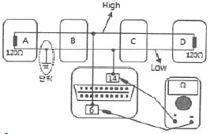
- 0
- 60
- 100
- 120
(정답률: 55%)
67. BMS(Battery Management System)에서 제어하는 항목과 제어내용에 대한 설명으로 틀린 것은?
- 고장 진단 : 배터리 시스템 고장 진단
- 컨트롤 릴레이 제어 : 배터리 과열 시 컨트롤 릴레이 차단
- 셀 밸런싱 : 전압 편차가 생긴 셀을 동일한 전압으로 매칭
- SoC(state of charge)관리 : 배터리의 전압, 전류, 온도를 측정하여 적정 SoC 영역관리
(정답률: 54%)
68. 12V 5W 번호판등이 사용되는 승용차량에 24V 3W가 잘못 장착되었을 때, 전류 값과 밝기의 변화는 어떻게 되는가?
- 0.125A, 밝아진다.
- 0.125A, 어두워진다.
- 0.0625A, 밝아진다.
- 0.0625A, 어두워진다.
(정답률: 44%)
69. 자동차 정기검사에서 전기장치의 검사기준 및 방법에 해당되지 않는 것은?
- 축전지의 설치상태를 확인한다.
- 전기배선의 손상여부를 확인한다.
- 전기선의 허용 전류량을 측정한다.
- 축전지의 접속, 절연상태를 확인한다.
(정답률: 70%)
70. 납산 배터리 양(+)극판에 대한 설명으로 틀린 것은?
- 음극판보다 1장 더 많다.
- 방전 시 황산납으로 변환된다.
- 충전 후 갈색의 과산화납으로 변환된다.
- 충전 시 전자를 방출하면서 이산화납으로 변환된다.
(정답률: 58%)
71. LAN(Local Area Network) 통신장치의 특징이 아닌 것은?
- 전장부품의 설치장소 확보가 용이하다.
- 설계변경에 대하여 변경하기 어렵다.
- 배선의 경량화가 가능하다.
- 장치의 신뢰성 및 정비성을 향상시킬 수 있다.
(정답률: 72%)
72. 점화플러그의 열가(heat range)를 좌우하는 요인으로 거리가 먼 것은?
- 엔진 냉각수의 온도
- 연소실의 형상과 체적
- 절연체 및 전극의 열전도율
- 화염이 접촉되는 부분의 표면적
(정답률: 64%)
73. 에어백 시스템에서 화약 점화제, 가스 발생제, 필터 등을 알루미늄 용기에 넣은 것으로, 에어백 모듈 하우징 안쪽에 조립되어 있는 것은?
- 인플레이터
- 에어백 모듈
- 디퓨저 스크린
- 클럭 스프링 하우징
(정답률: 68%)
74. 방향지시등의 점멸 속도가 빠르다. 그 원인에 대한 설명으로 틀린 것은?(오류 신고가 접수된 문제입니다. 반드시 정답과 해설을 확인하시기 바랍니다.)
- 플레셔 유닛이 불량이다.
- 비상등 스위치가 단선되었다.
- 전방 우측 방향지시등이 단선되었다.
- 후방 우측 방향지시등이 단선되었다.
(정답률: 61%)
75. 점화장치 고장 시 발생될 수 있는 현상으로 틀린 것은?
- 노킹 현상이 발생할 수 있다.
- 공회전 속도가 상승할 수 있다.
- 배기가스가 과다 발생할 수 있다.
- 출력 및 연비에 영향을 미칠 수 있다.
(정답률: 68%)
76. 리튬-이온 축전지의 일반적인 특징에 대한 설명으로 틀린 것은?
- 셀당 전압이 낮다.
- 높은 출력밀도를 가진다.
- 과충전 및 과방전에 민감하다.
- 열관리 및 전압관리가 필요하다.
(정답률: 61%)
77. 자동차 정기검사에서 4등식 전조등의 광도 검사기준으로 맞는 것은?(오류 신고가 접수된 문제입니다. 반드시 정답과 해설을 확인하시기 바랍니다.)
- 11500 칸델라 이상
- 12000칸델라 이상
- 15000칸델라 이상
- 112500칸델라 이상
(정답률: 68%)
78. 점화장치에서 드웰시간에 대한 설명으로 옳은 것은?
- 점화 1차 코일에 전류가 흐르는 시간
- 점화 2차 코일에 전류가 흐르는 시간
- 점화 1차 코일에 아크가 방전되는 시간
- 점화 2차 코일에 아크가 방전되는 시간
(정답률: 71%)
79. 다음에 설명하고 있는 법칙은?
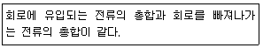
- 옴의 법칙
- 줄의 법칙
- 키르히호프의 제1법칙
- 키르히호프의 제2법칙
(정답률: 72%)
80. 기동전동기의 오버러닝클러치에 대한 설명으로 옳은 것은?
- 작동원리는 플레밍의 왼손 법칙을 따른다.
- 실리콘 다이오드에 의해 정류된 전류로 구동된다.
- 변속기로 전달되는 동력을 차단하는 역할도 한다.
- 시동 직후, 엔진 회전에 의한 기동전동기의 파손을 방지한다.
(정답률: 60%)